Lesson 7
Suffixes (added to the end of Hebrew words): בְּנוֹ "his son"
Quick reference
| Singular nouns | Plural nouns | |
|---|---|---|
| my | 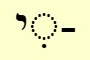 |
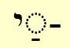 or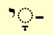 |
| your | 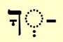 |
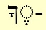 or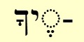 |
| your | 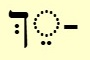 |
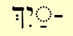 |
| his | 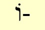 |
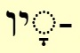 |
| her | 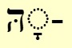 |
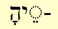 |
| our | 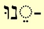 |
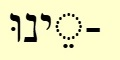 |
| your | 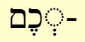 |
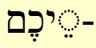 |
| their | 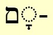 |
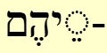 |
| your | 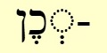 |
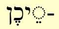 |
| their | 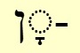 |
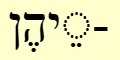 |
Suffixes (at the end of a noun): my,your, his, her, our, their, its (possessive pronouns)
-
The possessive pronouns my, your, his, her, our, their are not separate words in Tanakh Hebrew. These words always occur as suffixes added to the END of a noun.
Some examples:
son
my son
his son
her son
his sons
her sons
your sons
their sons
The suffix which is added at the end of the noun depends on whether the noun is singular or plural.
There are quite a lot of different suffixes. These are discussed in detail in later lessons.
The main thing to remember for now is that when you see my, your, his, her, our, or their in the translation do not look for a separate Hebrew word - it will always be added on to the end of the Hebrew noun.
The most frequently occurring possessive suffix is "his". The "his" suffixes are:
- וֹ- (usually on a singular noun), and
- יו- (usually on a plural noun).
Note that in each case, the final Hebrew letter is ו but the pronunciation is different: וֹ- is pronounced "oh" and and יו- is pronounced "v". You can practise recognizing the "his" suffix in the Exercise at the end of the lesson.
| singular noun | בְּנוֺwords/w013_bno
his son בִּתּוֺwords/w082_bito
his daughter מַלְכּוֺ words/w020_malko
his king אַרְצוֺwords/w021_artzo
his land יוֺמוֺwords/w022_yomo
his day אִשְׁתּוֺwords/w061_ishto
his wife בֵּיתוֺwords/w025_beito
his house עַמּוֺwords/w027_amo
his people יָדוֺwords/w028_yado
his hand דְּבָרוֺwords/w030_dvaro
his word אָבִיוwords/w034_aviv
his father |
| plural noun | בָּנָיוwords/w013_banav
his sons בְּנֹתָיוwords/w082_bnotav
his daughters אֱלֹהָיוwords/w018_elohav
his God יָמָיוwords/w022_yamav
his days נָשָׁיוwords/w061_nashav
his wives פָּנָיוwords/w024_panav
his face יָדָיוwords/w028_yadav
his hands דְּבָרָיוwords/w030_dvarav
his words אֲבֹתָיוwords/w034_avotav
his fathers/ancestors infrequent
|
A noun can have both a prefix AND a suffix
For example:
and his sons
in his eyes
in his hand
in your eyes
to my master
This is just an initial overview, we will discuss these prefixes and suffixes in detail in the lessons. In the meantime, here are some more examples:
Genesis 8:18 And Noah went out and his sons and his wife and his sons’ wives with him.
and his sons
and his wife
and his sons' wives
with him
Genesis 47:1 Then Joseph came and reported to Pharaoh, saying, my father and my brothers with their flocks and their herds and all that is theirs have come from the land of Canaan and are now in the region of Goshen.
my father
and my brothers
with their flocks
and their herds
Ruth 1:16 But Ruth replied "Do not urge me to leave you, to turn back and not follow you. For wherever you go, I will go; wherever you lodge, I will lodge; your people shall be my people, and your God my God.
your people
(shall be)
my people
and your God
my God
Exercise: Practise "his" וֹ- or יו-
The man named |his wife| Eve because she was the mother of all the living.
Genesis 3:20
tanakh/gen-03-20-db
וַיִּקְרָ֧א הָֽאָדָ֛ם שֵׁ֥ם אִשְׁתּ֖וֹ חַוָּ֑ה כִּ֛י הִ֥וא הָֽיְתָ֖ה אֵ֥ם כָּל־חָֽי׃
4
5:Eve
God blessed Noah and |his sons|
Genesis 9:1
tanakh/gen-09-01a-db
וַיְבָ֣רֶךְ אֱלֹהִ֔ים אֶת־נֹ֖חַ וְאֶת בָּנָ֑יו
5
2:God|3:Noah
Abram threw himself on |his face|,
Genesis 17:3
tanakh/gen-17-03a-db
וַיִּפֹּ֥ל אַבְרָ֖ם עַל פָּנָ֑יו
4
2:Abram
On the third day Abraham raised |his eyes| and saw the place from afar.
Genesis 22:4
tanakh/gen-22-04-db
בַּיּ֣וֹם הַשְּׁלִישִׁ֗י וַיִּשָּׂ֨א אַבְרָהָ֧ם אֶת־עֵינָ֛יו וַיַּ֥רְא אֶת־הַמָּק֖וֹם מֵרָחֹֽק׃
5
4:Abraham
And Abraham reached out |his hand| and took the knife to slay |his son|
Genesis 22:10
tanakh/gen-22-10-db
וַיִּשְׁלַח אַבְרָהָם אֶת־יָדוֹ וַיִּקַּח אֶת־הַמַּאֲכֶלֶת לִשְׁחֹט אֶת־בְּנוֹ׃
3 7
2:Abraham
And Jacob said to |his father| “I am Esau, your firstborn…”
Genesis 27:19
tanakh/gen-27-19aa-db
וַיֹּאמֶר יַעֲקֹב אֶל אָבִיו אָנֹכִי עֵשָׂו בְּכֹרֶךָ
4
2:Jacob |6:Esau
Isaac said to |his son|, “How did you succeed so quickly, my son?”
Genesis 27:20
tanakh/gen-27-20-a-db
וַיֹּ֤אמֶר יִצְחָק֙ אֶל בְּנ֔וֹ מַה־זֶּ֛ה מִהַ֥רְתָּ לִמְצֹ֖א בְּנִ֑י
4
2:Isaac
Joseph said to |his brothers|,”I am Joseph. Is my father still well?”….
Genesis 45:3
tanakh/gen-45-03a-db
וַיֹּ֨אמֶר יוֹסֵ֤ף אֶל אֶחָיו֙ אֲנִ֣י יוֹסֵ֔ף הַע֥וֹד אָבִ֖י חָ֑י
4
2:Joseph |6:Joseph
These are the names of the sons of Israel who came to Egypt with Jacob, each coming |with his household
Exodus 1:1
tanakh/ex-01-01-db
וְאֵ֗לֶּה שְׁמוֹת֙ בְּנֵ֣י יִשְׂרָאֵ֔ל הַבָּאִ֖ים מִצְרָ֑יְמָה אֵ֣ת יַעֲקֹ֔ב אִ֥ישׁ וּבֵית֖וֹ בָּֽאוּ׃
10
4:Israel |8:Jacob
He renews my life; He guides me in right paths as befits |his name
Psalm 23:3
tanakh/psalm-23-03-actor
נַפְשִׁ֥י יְשׁוֹבֵ֑ב יַֽנְחֵ֥נִי בְמַעְגְּלֵי־צֶ֝֗דֶק לְמַ֣עַן שְׁמֽוֹ׃
6
For God will not forsake |His people;
Psalm 94:14
tanakh/psalm-94-14a-schmuelhof
כִּ֤י ׀ לֹא־יִטֹּ֣שׁ יְהוָ֣ה עַמּ֑וֹ
5
4:God